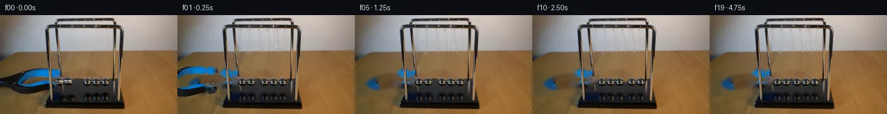

![首帧]()

Round 00
2026-11-05T01:03:05.784833+00:00像素候选变化代码 +190/−0inspection 更新
pixels ec429cad34779cb3 · code c49a289929bac6d3
查看本轮 generate.py 真实 diff
--- previous/generate.py
+++ current/generate.py
@@ -0,0 +1,190 @@
+from pathlib import Path
+import math
+import numpy as np
+import cv2
+from PIL import Image, ImageDraw, ImageFilter
+from scipy.ndimage import gaussian_filter
+from artifact_io import save
+
+ROOT=Path(__file__).resolve().parent
+S=4
+W,H=256,144
+src=np.array(Image.open(ROOT/'first_frame.png').convert('RGB'))
+
+def polygon(points):
+ im=Image.new('L',(W,H)); ImageDraw.Draw(im).polygon(points,fill=255)
+ return np.array(im)
+
+def ellipse_mask(cx,cy,rx,ry):
+ y,x=np.mgrid[:H,:W]
+ return (((x-cx)/rx)**2+((y-cy)/ry)**2 <= 1).astype(np.uint8)*255
+
+# Tool outline and actual gap between jaws. The static posts are separate foreground.
+tool_outline=polygon([(-5,93),(7,88),(18,84),(27,80),(42,77),(66,76),(82,78),(87,81),(88,87),(81,91),(60,91),(43,93),(28,99),(28,102),(46,98),(69,94),(79,94),(84,97),(87,103),(83,109),(65,113),(42,116),(21,115),(6,111),(-5,108)])
+tool_gap=polygon([(27,99),(34,93),(43,90),(58,89),(75,91),(71,95),(52,97),(35,101),(28,102)])
+tool_mask=cv2.subtract(tool_outline,tool_gap)
+# The original ball outlines exclude the surrounding photographed base.
+xs=[85.5,98.2,125.8,138.5,151.3]
+ys=[95.6,95.6,97.2,97.2,97.2]
+ball_remove=np.zeros((H,W),np.uint8)
+for x,y in zip(xs,ys):
+ ball_remove |= ellipse_mask(x,y,8.0,8.6)
+# Thin old suspension lines, including angled left pair.
+line_im=Image.new('L',(W,H)); ld=ImageDraw.Draw(line_im)
+front=[91.4,104.6,117.8,130.9,143.8]
+back=[89.3,102.5,115.7,128.9,142.0]
+for i,(x,y) in enumerate(zip(xs,ys)):
+ ld.line((front[i],20,x,y-5.5),fill=255,width=2)
+ ld.line((back[i],11,x-.4,y-5.5),fill=255,width=2)
+# The faint threads overlap; extra fine stationary thread tracks are repaired too.
+for x in [102,115,128,141,154]:
+ ld.line((x,20,x+1,88),fill=255,width=1)
+strings=np.array(line_im)
+reflection_remove=np.zeros((H,W),np.uint8)
+for x in [93,105,126.5,139,152]:
+ reflection_remove |= ellipse_mask(x,120,8.5,10)
+
+front_post=polygon([(66,21),(68,16),(71,16),(74,67),(79,127),(73,129),(68,80)])
+rear_post=polygon([(80,13),(84,13),(88,90),(88,92),(85,92),(81,40)])
+# Close fitting post protection: do not erase the metal edges.
+post_keep=cv2.bitwise_or(front_post,rear_post)
+remove=cv2.bitwise_or(cv2.bitwise_or(tool_outline,ball_remove),cv2.bitwise_or(strings,reflection_remove))
+remove[post_keep>0]=0
+remove[:20,:]=0
+# Wood repair follows the local illumination; high frequency grain from the same table.
+plate=cv2.inpaint(src,remove,5,cv2.INPAINT_TELEA)
+# Base reflections are filled with a smooth dark base gradient plus local texture.
+Y,X=np.mgrid[:H,:W]
+base_region=(reflection_remove>0)&(Y>108)&(X>83)&(X<163)
+for c in range(3):
+ row_colors=np.stack([src[:,80,c],src[:,162,c]],axis=1).astype(float)
+ grad=row_colors[:,0,None]+np.clip((X-80)/82,0,1)*(row_colors[:,1,None]-row_colors[:,0,None])
+ plate[:,:,c][base_region]=np.clip(grad[base_region],0,255)
+# Small remnant of rear support hidden by the original first ball.
+hi_plate=Image.fromarray(plate).resize((W*S,H*S),Image.Resampling.BICUBIC)
+
+# A measured chrome sphere texture from the supplied last ball, with a small mounting cap.
+# Individual variants keep the slight differences in the original reflected environment.
+def sphere_sprite(cx,cy):
+ box=(int(math.floor(cx))-8,int(math.floor(cy))-9,int(math.floor(cx))+9,int(math.floor(cy))+9)
+ patch=Image.fromarray(src).crop(box).resize((17*S,18*S),Image.Resampling.BICUBIC).convert('RGBA')
+ yy,xx=np.mgrid[:18*S,:17*S]/S
+ lx=cx-box[0];ly=cy-box[1]
+ dist=np.sqrt(((xx-lx)/6.25)**2+((yy-ly)/6.2)**2)
+ alpha=np.clip((1.045-dist)*S*6.25,0,1)
+ cap=Image.new('L',patch.size);d=ImageDraw.Draw(cap)
+ d.polygon([(int((lx-3)*S),int((ly-5)*S)),(int((lx-.4)*S),int((ly-7.6)*S)),(int((lx+1.8)*S),int((ly-6)*S)),(int((lx+3.3)*S),int((ly-4.4)*S))],fill=255)
+ alpha=np.maximum(alpha,np.array(cap)/255)
+ patch.putalpha(Image.fromarray((alpha*255).astype(np.uint8)))
+ return patch,(lx,ly)
+# The exposed pair uses the corresponding chrome texture, once away from the tool.
+sprites=[sphere_sprite(xs[2],ys[2]),sphere_sprite(xs[3],ys[3]),sphere_sprite(xs[2],ys[2]),sphere_sprite(xs[3],ys[3]),sphere_sprite(xs[4],ys[4])]
+
+# Extract a reflection with soft edges. The dark image plus glints is photographed on this base.
+rbox=(143,109,161,131)
+rgb=np.array(Image.fromarray(src).crop(rbox).resize((18*S,22*S),Image.Resampling.BICUBIC)).astype(float)
+yy,xx=np.mgrid[:22*S,:18*S]/S
+ra=np.exp(-(((xx-9)/5.8)**4+((yy-11.1)/7.7)**4))*0.88
… diff truncated; 103 more lines …